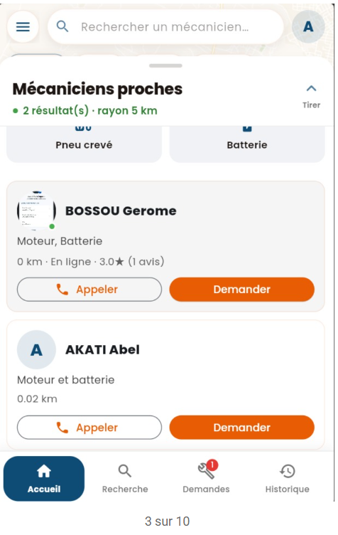
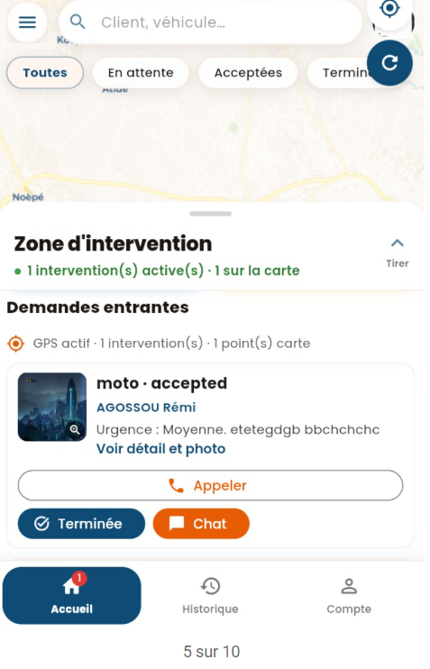
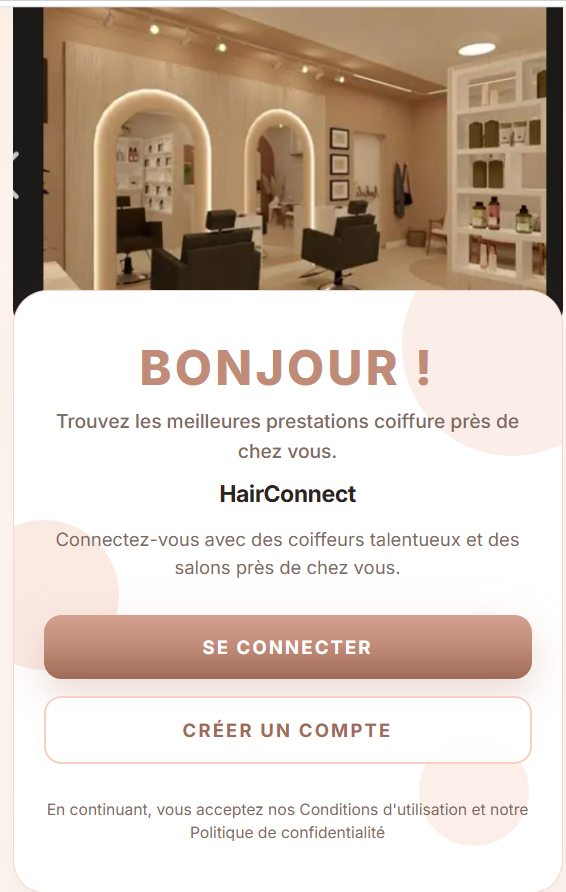

Licence Mathématiques & Informatique · UCAO-UUT
Abigail Matanvi
Étudiante en mathématiques, statistiques et informatique — analyse de données, modélisation et développement d’applications concrètes.
- Formation
- L3 en cours
- Projets mis en avant
- 2
- Localisation
- Lomé, Togo
Présentation
Une synthèse alignée sur mon profil professionnel. Ouvrir le CV en PDF
Étudiante en 3e année de Licence Mathématiques et Informatique, je possède de solides bases en mathématiques, statistiques et informatique. Mon parcours m’a permis de développer des compétences en analyse de données, modélisation et programmation. Rigoureuse, curieuse et dotée d’un esprit analytique, je souhaite mettre mes connaissances en pratique à travers un stage dans les domaines de la statistique, de l’analyse de données ou de la science des données, afin de contribuer à des projets concrets tout en enrichissant mon expérience professionnelle.
Formation
Parcours académique tel qu’indiqué sur mon CV.
-
2023 — 2026 · En cours
Licence Mathématique et Informatique
UCAO-UUT — 3e année
-
2023
Baccalauréat — mention Assez bien
CS Le Rossignol
Compétences
Compétences techniques, outils et qualités professionnelles.
Outils / Logiciels
Écosystème projets
Compétences
- Analyse et interprétation des données
- Extraire des informations utiles à partir des données
Projets de fin d’année
Réalisations présentées sur mon CV, avec stack et fonctionnalités.
Application mobile
Mechassist
Application de mise en relation entre clients et mécaniciens.
- Authentification utilisateur
- Géolocalisation
- Gestion des interventions
- Notes et avis clients


Application web & mobile
Hairconnect
Mise en relation entre professionnels de la coiffure et clients (marketplace, rendez-vous, tableau de bord).
- Gestion des utilisateurs
- Prise de rendez-vous
- Marketplace

Contact
Coordonnées identiques à mon CV — pour un échange, une question sur un projet ou une opportunité.